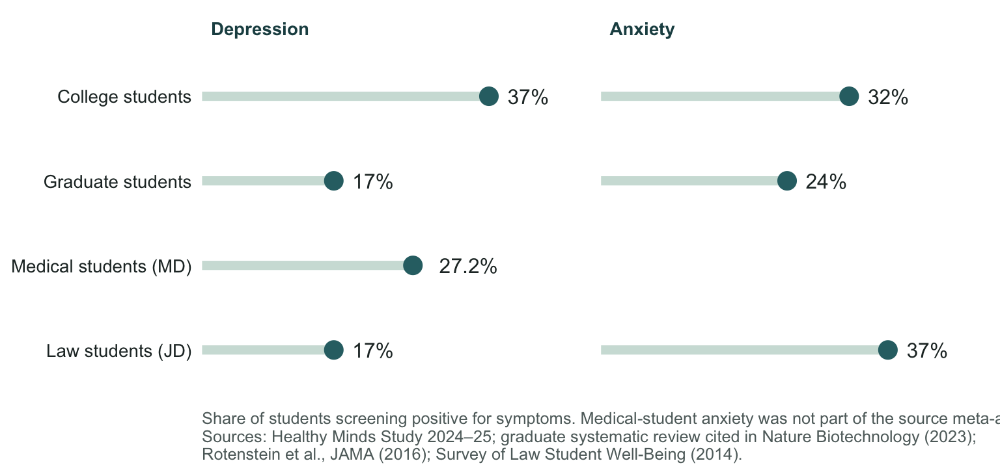
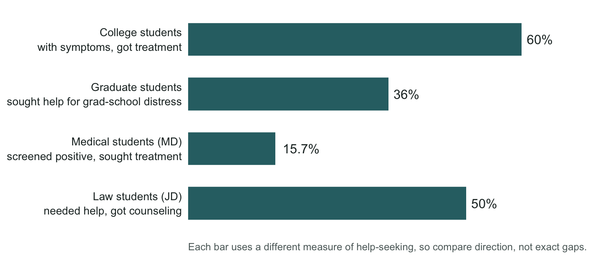

Stress Across the Academic Path
How stress and help-seeking compare for college, graduate, medical (MD), and law (JD) students
Stress doesn’t end with a bachelor’s degree. For many students, it changes shape. Graduate, medical, and law students face longer hours, high-stakes exams, debt, and intense competition. Professional students also face a pressure most undergraduates don’t: worrying that getting mental health care could affect their future license to practice due to social structures viewing them not fit for their role.
WarningRead these numbers with care
Each group’s figures come from a different study, with different screening tools, years, and samples. They show the general picture for each group, not exact gaps between groups. The source table at the bottom lists the tool and year behind every number.
Symptoms by path
What stands out:
- College students overall report high symptom levels, though Healthy Minds data show depression and anxiety have declined each year since 2022.
- Medical students show depressive symptoms in more than 1 in 4 students across 43 countries, well above the general adult population.
- Law students stand out for anxiety: more than a third screened positive, and 14% screened in the severe range.
- Graduate students vary widely by study. A large review puts depression and anxiety near 17% and 24%, while one well-known 2018 survey of mostly PhD students found about 4 in 10, though that survey was not a random sample.
Who gets help
The bigger difference between paths may not be how many students struggle, but how many get help.

Medical students stand out: in the meta-analysis, only about 1 in 6 who screened positive for depression sought psychiatric treatment.
A pressure unique to professional students: licensure
Future doctors and lawyers must pass a licensing review before they can practice. Some of these reviews have asked about past mental health diagnoses or treatment. Students hear about these questions, and many decide it is safer not to get help.
| Path | What the research found |
|---|---|
| Law (JD) | In the 2021 Survey of Law Student Well-Being, 44% of law students said they feared seeking help for a mental health issue because it could threaten their bar admission. |
| Medicine (MD) | At one U.S. medical school, 33% of students said licensing disclosure questions substantially discourage them from seeking treatment, and 91% were unsure or wrong about whether their state even asks. |
This is where law and policy become a leverage point in the system:
That change is already happening. According to the AAMC, 43 medical licensing boards have removed questions about past mental health history and now ask only about current impairment. Several states, including Washington and Louisiana, have removed mental health questions from bar admission reviews.
Why this matters for the guide
Morehouse School of Medicine trains future physicians and health professionals, so the barriers on this page apply directly to the students the guide serves. The Student Stress and Support Guide focuses on the earliest fix: helping students recognize stress and know where to go before fear and delay take over.
Sources
| Group | Source | Tool and sample |
|---|---|---|
| College students | Healthy Minds Study 2024–2025; treatment rate | PHQ-9 and GAD-7, moderate to severe; 84,000+ students at 135 schools (undergrad and grad) |
| Graduate students | Nature Biotechnology (2023), citing a systematic review and a help-seeking survey | Pooled estimates across studies |
| Medical students | Rotenstein et al., JAMA (2016) | Meta-analysis of 167 cross-sectional studies, 43 countries |
| Law students | Survey of Law Student Well-Being (2014) | 3,300+ students at 15 law schools |
| Law, licensure | 2021 Survey of Law Student Well-Being; NC Bar summary | 5,000+ students at 39 law schools |
| Medicine, licensure | General Hospital Psychiatry (2021); AAMC | 327 students at one medical school |